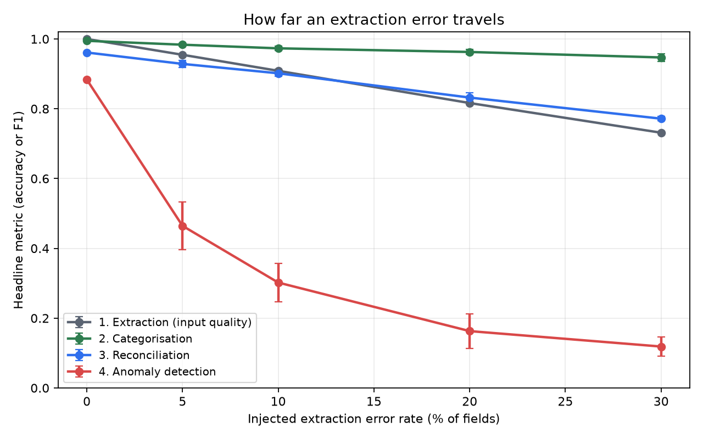
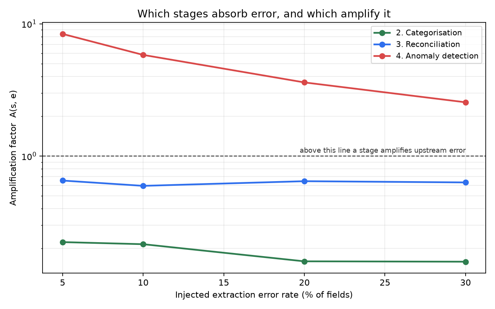
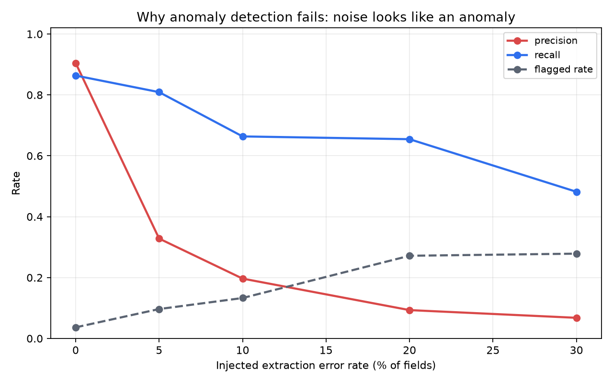
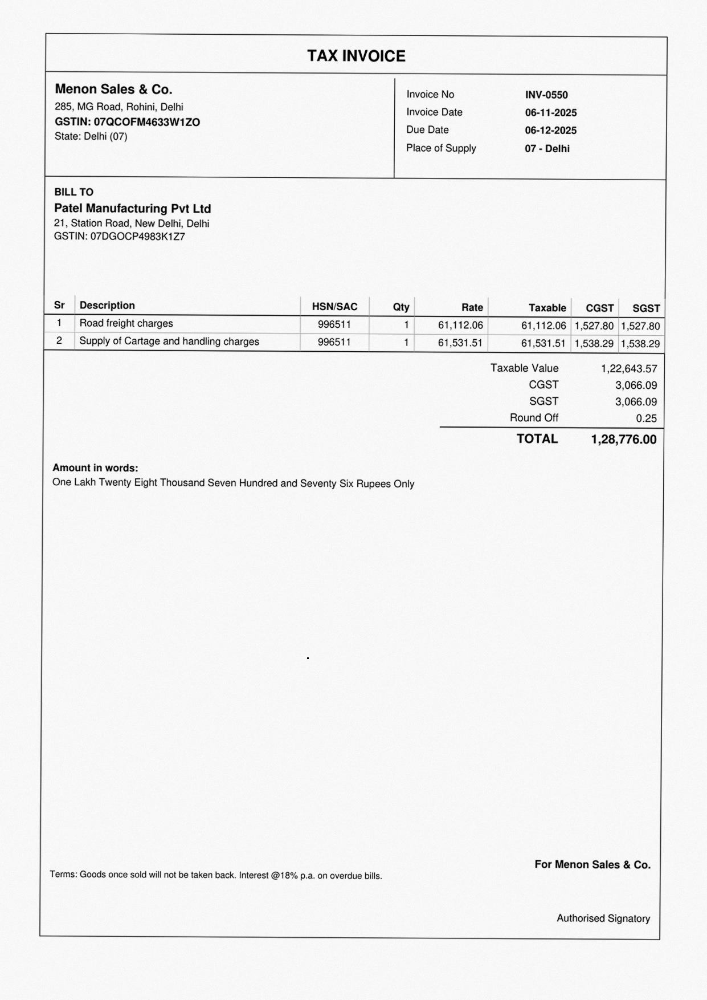
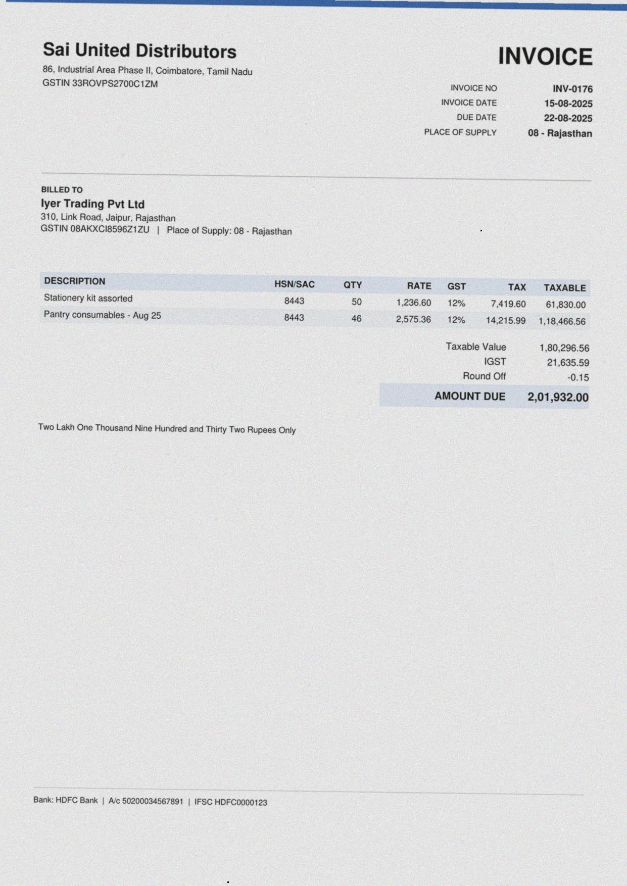
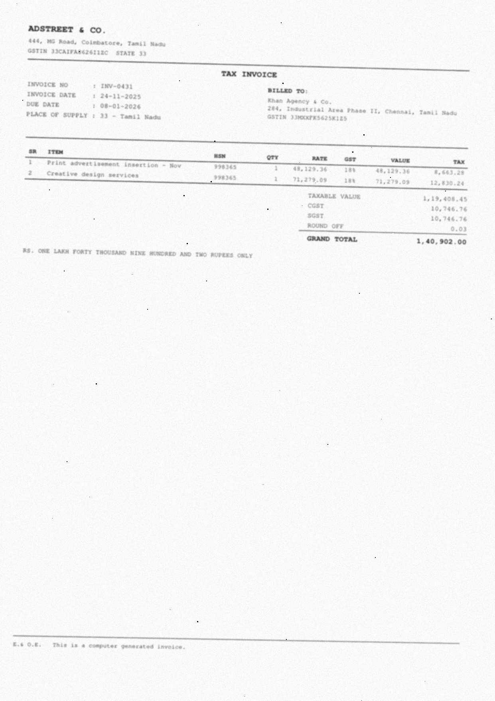

Existing work evaluates each stage on clean input. In production every stage reads whatever the one before it produced. This measures the difference.
Headline metric by injected error rate
| stage | method | 0% | 5% | 10% | 20% | 30% |
|---|---|---|---|---|---|---|
| 1_extraction | injected | 1.0 | 0.955 | 0.909 | 0.816 | 0.731 |
| 2_categorisation | char_lr | 0.993 | 0.982 | 0.974 | 0.965 | 0.949 |
| 2_categorisation | hybrid_lr | 0.995 | 0.984 | 0.973 | 0.963 | 0.947 |
| 2_categorisation | hybrid_rf | 0.97 | 0.959 | 0.943 | 0.926 | 0.91 |
| 2_categorisation | word_lr | 0.995 | 0.984 | 0.974 | 0.96 | 0.94 |
| 3_reconciliation | m1_exact | 0.646 | 0.623 | 0.608 | 0.549 | 0.519 |
| 3_reconciliation | m2_fuzzy | 0.745 | 0.719 | 0.703 | 0.649 | 0.604 |
| 3_reconciliation | m3_forest | 0.961 | 0.929 | 0.902 | 0.832 | 0.772 |
| 3_reconciliation | m3_learned | 0.918 | 0.897 | 0.871 | 0.826 | 0.785 |
| 3_reconciliation | m4_assignment | 0.911 | 0.888 | 0.871 | 0.812 | 0.777 |
| 4_anomaly | a1_rules | 0.743 | 0.189 | 0.122 | 0.092 | 0.081 |
| 4_anomaly | a2_statistical | 0.24 | 0.226 | 0.242 | 0.163 | 0.076 |
| 4_anomaly | a3_isolation_forest | 0.884 | 0.465 | 0.302 | 0.163 | 0.119 |
| 4_anomaly | a3_lof | 0.167 | 0.031 | 0.061 | 0.045 | 0.026 |
Extraction (E1)
Field accuracy against how badly the scan was degraded.
| severity_bucket | documents | accuracy | precision | missing_rate |
|---|---|---|---|---|
| [0.0, 0.2) | 770 | 0.819 | 0.899 | 0.089 |
| [0.2, 0.4) | 1005 | 0.778 | 0.88 | 0.116 |
| [0.4, 0.6) | 986 | 0.668 | 0.822 | 0.188 |
| [0.6, 0.8) | 987 | 0.493 | 0.742 | 0.336 |
| [0.8, 1.01) | 246 | 0.384 | 0.673 | 0.429 |
Categorisation (E2)
Keyword rules against text models, on clean fields and on real OCR output.
| model | extracted_ocr | extracted_text | truth |
|---|---|---|---|
| char_lr | 0.856 | 0.993 | 0.993 |
| hybrid_lr | 0.854 | 0.995 | 0.993 |
| hybrid_rf | 0.821 | 0.97 | 0.97 |
| rules_c1 | 0.631 | 0.798 | 0.8 |
| word_lr | 0.856 | 0.995 | 0.995 |
Reconciliation (E3)
Exact, fuzzy, learned and globally assigned matching.
| matcher | extracted_ocr | extracted_text | truth |
|---|---|---|---|
| m1_exact | 0.486 | 0.646 | 0.646 |
| m2_fuzzy | 0.568 | 0.745 | 0.745 |
| m3_forest | 0.742 | 0.961 | 0.961 |
| m3_learned | 0.207 | 0.918 | 0.918 |
| m4_assignment | 0.677 | 0.911 | 0.911 |
Anomaly detection (E4)
Rules, per-supplier statistics and unsupervised models.
| detector | extracted_ocr | extracted_text | truth |
|---|---|---|---|
| a1_rules | 0.113 | 0.667 | 0.743 |
| a2_statistical | 0.077 | 0.24 | 0.24 |
| a3_isolation_forest | 0.243 | 0.884 | 0.884 |
| a3_lof | 0.087 | 0.167 | 0.167 |
Figures



The documents
Every invoice is rendered in one of four layouts, then degraded to look scanned or photographed.

classic · severity 0.05
modern · severity 0.45
compact · severity 0.85Reproducing this
Everything here is generated from a seed, so the dataset is never committed.
python -m gstpipe.generator.cli --businesses 30 --seed 2026
python -m gstpipe.render.cli --dataset data/synthetic/seed-2026
python -m gstpipe.inject.cli --dataset data/synthetic/seed-2026
The review application needs a Python runtime and Tesseract, so it is run separately — see
DEPLOY.md.